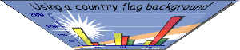
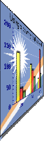
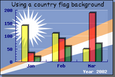
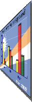
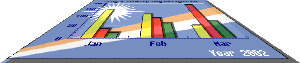

As a final "touch" on the image it is possible to apply a shearing transformation
to the generated image. This can be used to give the image a "3D" perspective. The
transformation is done by the method Graph::Set3DPerspective() It
should be noted that since these transformations are all done in PHP they are (as
all image processing) quite processor intensive.
In order to get access to the transformation functionality the module
"jpgraph_imgtrans.php" must first be included in the
script.
In Figure 14.72. Different types of shearing transformation the original image is shown in the middle and the four types of shearing is shown around in positions indicating the type of shearing. The symbolic name for the type of shearing is shown below each image.
Figure 14.72. Different types of shearing transformation
|

| ||
|

|
 [Original graph] |

|
|

| ||
The transformation is specified with the method
Graph::Set3DPerspective($aDir,$aAlpha=100,$aShear=120,$aQuality=false,$aFillColor='#FFFFFF',$aBorder=false,$aMinSize=true,$aHorizonPos=0.5)
The different parameters that effect the transformation can now be explained with the help of Figure 14.73. Explaining the shearing parameters
$aDirThis is the symbolic constant to define which of the four basic types of transformation as shown in Figure 14.72. Different types of shearing transformation
$aAlphaThis defines the distance from the bottom of the image to the artificial horizon
$aShearThis defines from the perspective vanish point on the artificial horizon to the crossing of the "shearing line" on the artificial horizon..
$aHorizPosThis specifies the distance from the left edge of the image to the perspective vanish point
$aQualityWith this parameter set to true the algorithm will do additional image interpolation to increase the quality of the resulting transformation on the expense of further processing time.
$aFillColorSpecifies the background fill color to be used. A value of false (the default) indicates no fill
$aBorderAdd a border around the transformed image
$aMinSizeThe transformed image is usually smaller than the original image and if this parameter is set to true then the resulting image will be as small as it can be. If it is false then the original image size will be kept.
This might be regarded as "gimmick" factor but has proven useful in batch (off-line) processing to produce a sequence of images that gives the appearance of a graph that rotates into place.